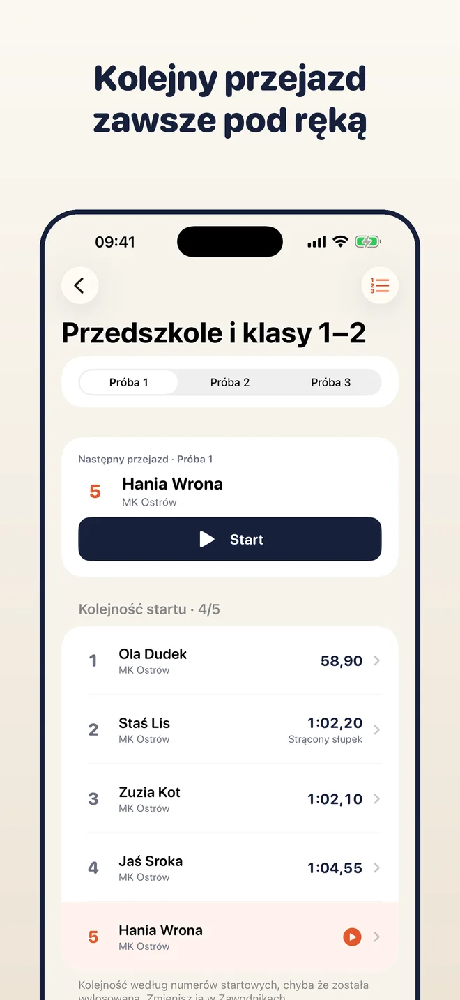
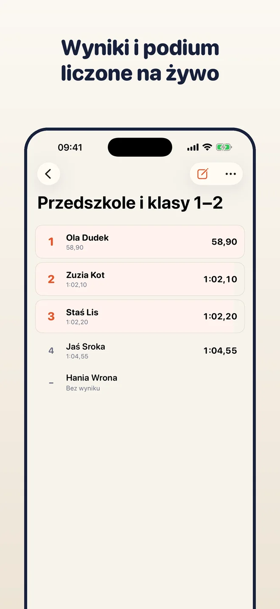
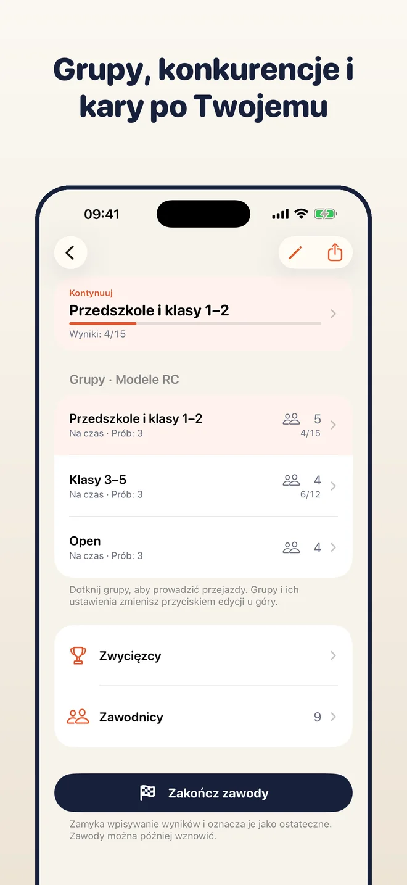
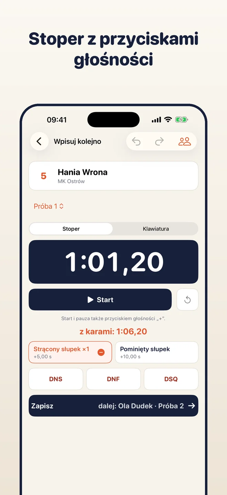
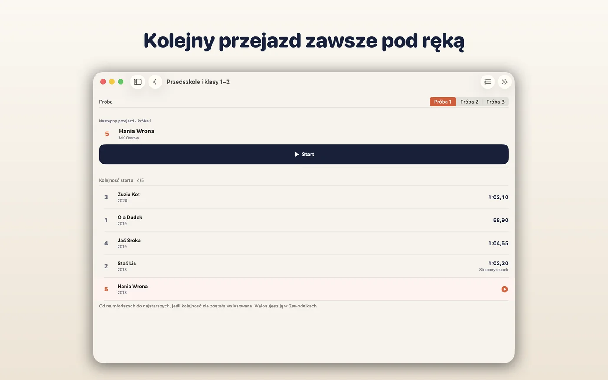
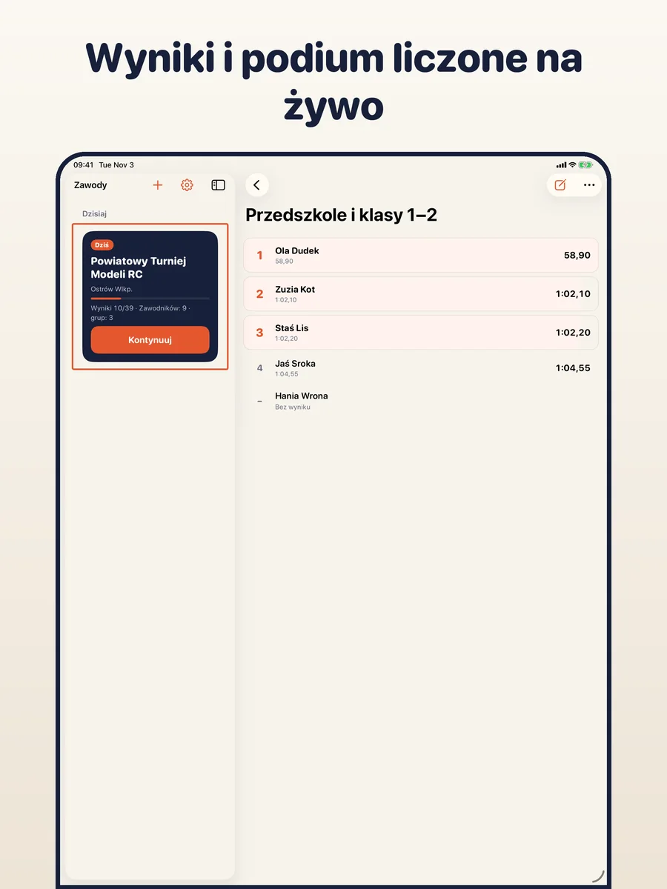
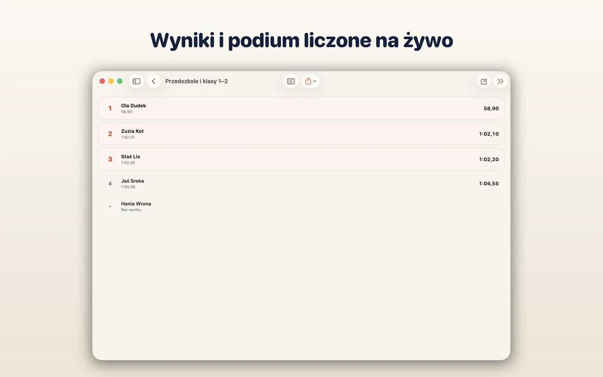
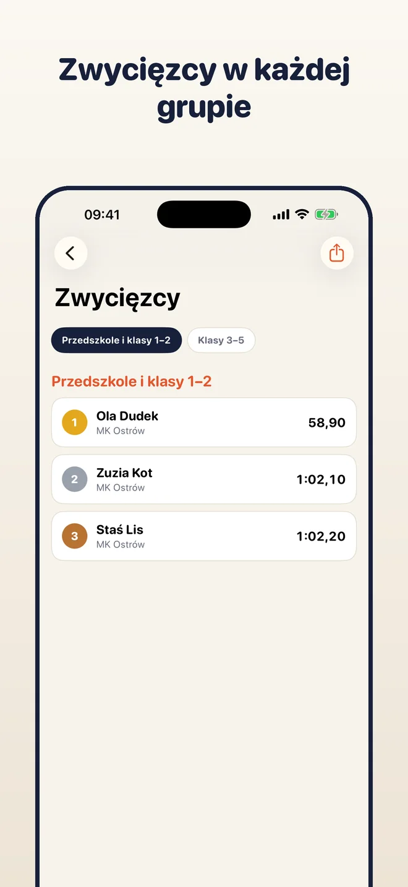
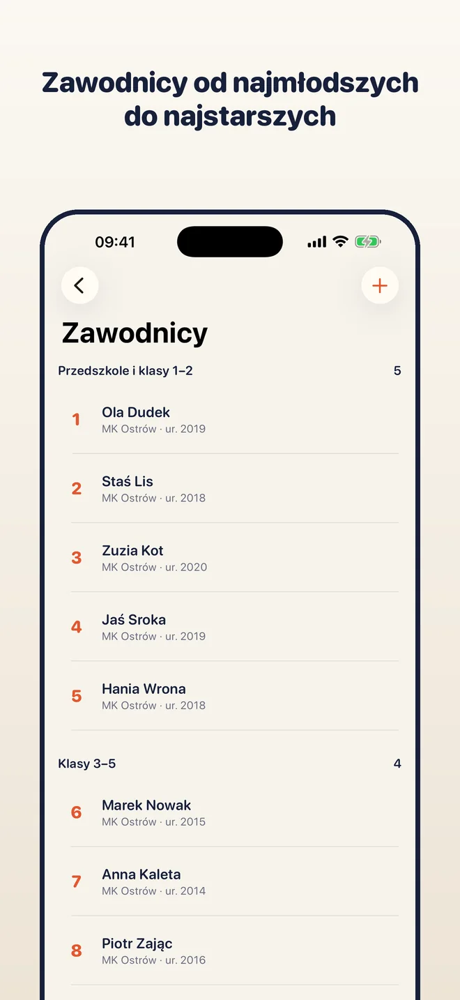

Utwórz grupy, dodaj zawodników, mierz każdy przejazd i wpisuj wyniki. Miejsca, remisy, klasyfikacja drużynowa i generalna liczą się same, a potem eksportujesz PDF, CSV albo obraz podium. Wszystko zostaje na Twoim urządzeniu.
iPhone · iPad · Mac

Wybierz rodzaj zawodów i dodaj grupy, np. wiekowe albo Open. Każda grupa ma własną liczbę prób, sposób liczenia i kary.

Aplikacja pokazuje, kto jest następny. Włącz stoper, dodaj karę jednym dotknięciem, a czas trafi prosto do wyniku.

Klasyfikacja, remisy i zwycięzcy są zawsze aktualne. Wyeksportuj PDF, CSV, obraz podium do mediów społecznościowych albo kopię całych zawodów.
Najlepszy przejazd, suma najlepszych, średnia, N z M rund, noty jury, sektory, etapy. Gotowe przykłady i własne reguły.
Modele RC, wędkarstwo, sport pożarniczy i inne. Jedna osoba może startować w kilku grupach, np. w swojej i w Open.
Start i pauza dotknięciem albo przyciskiem głośności „+”. Czas trafia do wyniku, a kary są przyciskami pod nim.
Numery startowe ustalają kolejność w grupie. Możesz ją wylosować albo zmienić przeciągając; następny zawodnik jest zawsze widoczny.
Miejsca, remisy i niepełne wyniki liczą się w trakcie wpisywania. Zwycięzcy grup, klasyfikacja drużynowa i generalna.
Zakończ zawody, aby oznaczyć wyniki jako ostateczne, a w razie poprawek wznów je jednym dotknięciem.
Wyślij tabelę wyników, arkusz, obraz podium albo kopię .tallyboard całych zawodów.
Bez konta, reklam i naszego serwera. Wyniki zostają na urządzeniu albo w Twoim iCloud, jeśli włączysz synchronizację.
Jedna aplikacja, jeden zakup: darmowa na wszystkich trzech. Telefon mierzy przejazdy, a Mac lub iPad pokazuje całe zawody. Z synchronizacją iCloud (opcjonalną) mają te same dane.





Tallyboard nie ma ściany płatności ani limitów. Jeśli Ci pomaga, możesz wesprzeć jej rozwój dobrowolnym napiwkiem.
Napiwki to jednorazowe zakupy obsługiwane przez Apple. Aplikacja nie widzi Twoich danych płatniczych.
Gotowe reguły są przykładami opartymi na typowych regulaminach. Nie zastępują oficjalnego regulaminu zawodów; za reguły i ostateczne wyniki odpowiada organizator.
Nie. Nie ma kont ani reklam.
Na Twoim urządzeniu. Jeśli włączysz synchronizację iCloud, także w Twoim prywatnym iCloud. Nie mamy serwera ani dostępu do Twoich danych.
Do każdych, w których zawodnicy startują po kolei, a o miejscu decyduje czas, punkty lub noty: RC, wędkarstwo, sport pożarniczy, konkursy z jury, autocross i inne. Jeśli gotowe reguły nie pasują, ułożysz własne.
Tak. Włącz synchronizację iCloud w Ustawieniach albo przenieś zawody plikiem kopii .tallyboard.
Po polsku, angielsku, niemiecku, hiszpańsku i włosku.
Za darmo na iPhone, iPad i Mac. Bez konta.
Pobierz z App Store